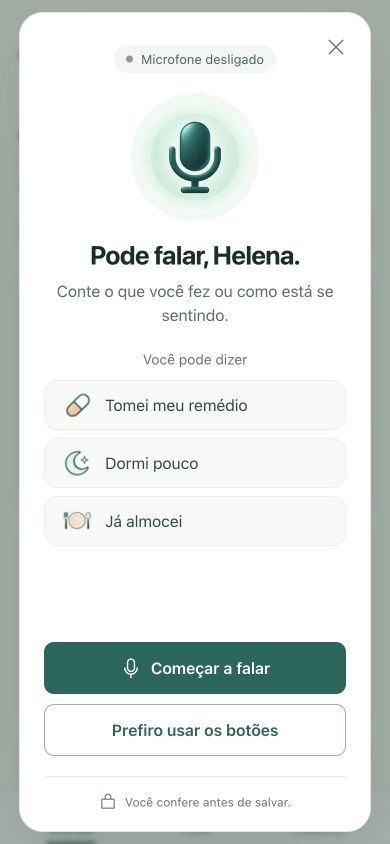
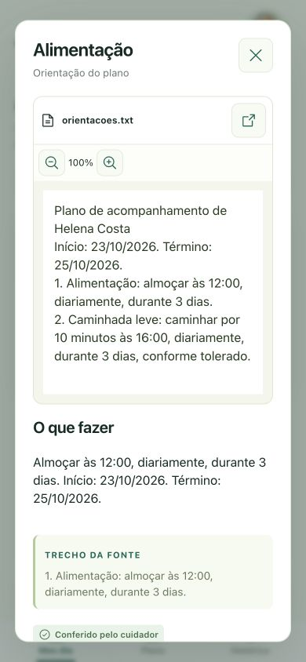
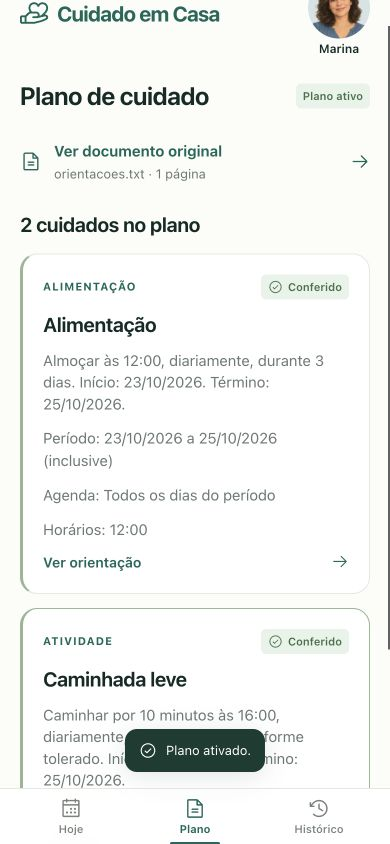

Cuidado em Casa
Bom dia, Helena
Sua rotina de hoje
HojeCaminhada leve
9h · do seu plano
Sem registro
Registrado por Helena · 9h12
Como foi sua noite?
Conte como dormiu.
Exemplo da rotina já revisada.
Organize as orientações em uma rotina compartilhada.
Use a voz para registrar o dia e acompanhe o que já foi feito.
Protótipo web pensado para o celular.
Prévia interativa · dados fictícios
Orientações para casa
Exemplo fictício
Conferir cada item antes de ativar a rotina.
Bom dia, Helena
9h · do seu plano
Sem registro
Registrado por Helena · 9h12
Conte como dormiu.
Exemplo da rotina já revisada.
Bom dia, Marina
9h · do seu plano
Sem registro
Registrado por Helena · 9h12
O registro de Helena aparece aqui depois da confirmação.
Ainda não informado
Registre com Helena. Acompanhe com Marina.
Esta prévia não salva dados no aplicativo.
Conte como dormiu, como se alimentou ou se fez um cuidado da rotina.
“Dormi pouco
esta noite.”
Exemplo de uso no aplicativo.
Antes de salvar, você confere.
Revise a proposta e confirme na tela. Se preferir, use os botões. O registro guarda quem fez e quando.
GPT-Live conduz a conversa. Decisions interpreta a intenção e gera uma proposta para você conferir.

Proposta para conferir
Ainda não registrado.
A confirmação vem antes de salvar.
O cuidado começa no que foi orientado. A rotina ganha forma com revisão humana — e cada registro chega às duas perspectivas.
Envie um PDF, uma foto ou o texto das orientações. A IA prepara um rascunho; quem cuida confere cada item antes de ativar a rotina.
A Responses API da OpenAI organiza a leitura em um rascunho estruturado. A confirmação continua com quem cuida.
Rascunho · exemplo fictício
Caminhada leve
Horário: conferir no original
Aguarda revisão humana


Capturas do protótipo · dados fictícios.
Não. O protótipo abre no navegador e foi pensado para o celular. É preciso estar conectado para salvar registros.
Não. Ela prepara um rascunho das orientações e propostas de registro. Não diagnostica nem recomenda ou altera tratamentos. A leitura automática não foi validada clinicamente.
Esta versão trabalha com texto impresso legível. Manuscritos e trechos difíceis exigem revisão manual. Uma dúvida de leitura precisa ser esclarecida antes de ativar a rotina.
São personagens de um caso fictício para experimentar as duas perspectivas. O convite para conectar duas contas ainda não está disponível.
A leitura dos documentos usa a Responses API com GPT-6.1 Sol e saída estruturada. A conversa usa GPT-Live, com o modelo gpt-live-1. Decisions, com GPT-6 Luna, interpreta a intenção de registro. O aplicativo só salva a ação depois da confirmação na tela.
Experimente o caso de Helena e Marina e conheça o caminho das orientações até o registro do dia.
Testar no navegadorDemonstração com dados fictícios.